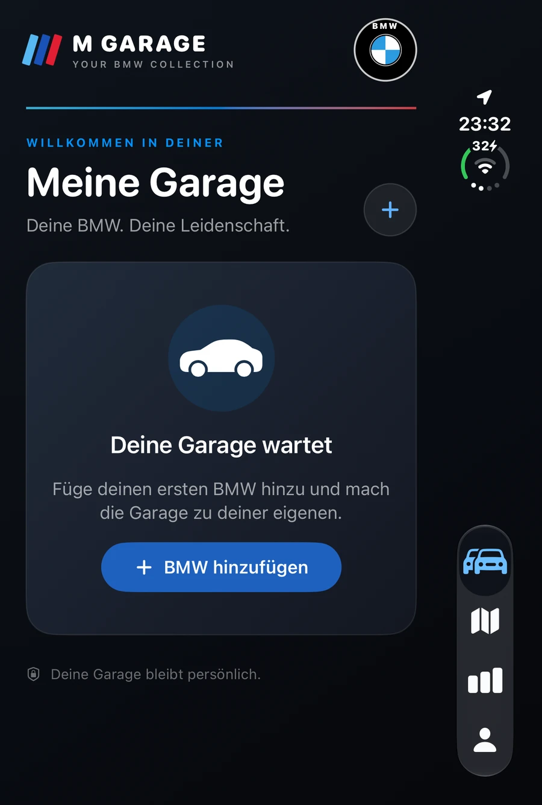
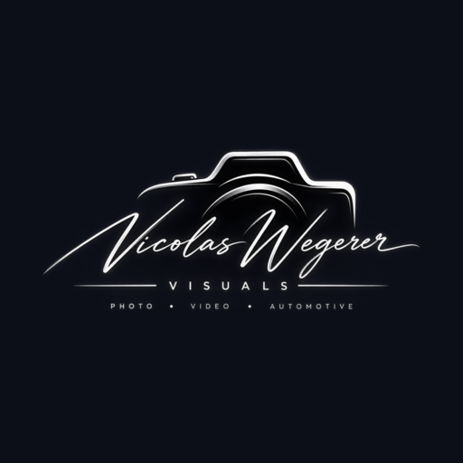

NICOLAS WEGERER · APP-ENTWICKLUNG AUS SENDEN
Aus einer Idee.
Eine eigene App.
Für die nächste Ausfahrt, kreative Projekte und den Baustellenalltag. Ich entwickle Apps, die konkrete Aufgaben einfacher machen – und zeige hier, wie sie entstehen.
 Serpentivo Unterwegs auf CarPlay
Serpentivo Unterwegs auf CarPlay
M Garage Deine FahrzeugeAus dem Alltag.
Jedes Projekt beginnt mit einer Aufgabe, die ich selbst besser lösen möchte.
Schritt für Schritt.
Gestaltung, Funktionen und echte Tests wachsen gemeinsam.
Offen beschrieben.
Du siehst, was eine App heute kann und woran noch gearbeitet wird.
01 / EIGENE PROJEKTE
Verschiedene Ideen.
Eine persönliche Handschrift.
Vier Apps mit unterschiedlichen Aufgaben. Wähle ein Projekt und entdecke Funktionen, Originalaufnahmen und den aktuellen Entwicklungsstand.
Für Wege, die sich lohnen.
Alpenpässe entdecken, Touren mit Stopps planen und die Ausfahrt im Blick behalten. Serpentivo verbindet Routenplanung, Sprachhinweise und CarPlay mit praktischen Zielen für unterwegs.
Deine Fahrzeuge. Dein Überblick.
Fahrzeugdaten, Fotos und Notizen sammeln, Ausfahrten festhalten und Kosten zuordnen. M Garage beginnt bei deiner persönlichen Sammlung – lokal auf dem iPhone.
Unabhängiges Projekt. BMW CarData im persönlichen Test; keine universelle VIN-Abfrage.


Visuals StudioVom ersten Bild bis zum Export.
Medien importieren, Projekte organisieren und den eigenen Look entwickeln. Visuals Studio hält Originale, Bearbeitungen und Exporte auf dem Mac übersichtlich zusammen.
Workflow-Illustration · aktuelle Originalaufnahmen folgen.
Eine Crew. Alle Marken.
Eine App für eine private Auto-Crew: Fahrzeuge zeigen, Treffen vorbereiten und Bilder im passenden Album sammeln. Mit Adresssuche, Kartenübergabe und Kalenderexport im lokalen Prototyp.
Eine feste private Gruppe. Gemeinsamer Onlinebetrieb noch in Entwicklung.

UND WAS NOCH KOMMT
Raum für neue Ideen.
Neben unseren vorgestellten Apps entstehen weitere Ideen und Werkzeuge. Neue Projekte ergänzen wir hier, sobald es einen konkreten Entwicklungsstand zu zeigen gibt.
GENAUER HINSEHEN
Mehr Einblicke. App für App.
Die vollständigen Galerien stehen auf den Projektseiten. Aufnahmen und Illustrationen sind jeweils gekennzeichnet.
ENTWICKELT FÜR ATS
Entwickelt für den Baustellenalltag.
Neben meinen eigenen Projekten entwickle ich ATS Bau und ATS Team für ATS Abdichtungstechnik Senden GmbH: zwei Fachanwendungen für Dokumentation und interne Abläufe.
ATS BAU · BAUSTELLEN & DOKUMENTATION
Vom Tagesbericht bis zur Freigabe.
Baustellen organisieren, Aufgaben und Mängel festhalten, Fotos und Dokumente zuordnen und Tagesberichte bearbeiten. Der Berichtsablauf verbindet die Erfassung auf der Baustelle mit der Prüfung durch berechtigte Verantwortliche.

ATS TEAM · MITARBEITER & ORGANISATION
Die Arbeit im Team im Blick.
Arbeitszeiten, Team-Kommunikation, Baustellenzuordnung, Anträge und aktuelle Firmeninformationen. Die Verwaltung bietet eigene Bereiche für berechtigte Verantwortliche; persönliche Unterlagen gehören in geschützte Nutzerbereiche.

Die Aufnahmen zeigen frühere Teststände. Zugang und Funktionen richten sich nach den betrieblichen Berechtigungen bei ATS.
03 / WEITERENTWICKLUNG
Mit einer Idee starten.
Schritt für Schritt wachsen.
Wir entwickeln unsere Produkte kontinuierlich weiter. Was bereits enthalten ist und was noch entsteht, steht auf der jeweiligen App-Seite.
Verstehen
Eine konkrete Aufgabe bildet den Ausgangspunkt.
Gestalten
Klare Abläufe und eine verständliche Oberfläche.
Erproben
Funktionen im Alltag testen und Feedback aufnehmen.
Weiterentwickeln
Verbessern, pflegen und neue Ideen umsetzen.
04 / ÜBER NW VISUALS
Direkt. Persönlich.
Technisch klar.
Ich bin Nicolas Wegerer aus Senden. Bei NW Visuals verbinde ich meine Ideen mit Gestaltung und Softwareentwicklung. Vom kreativen Werkzeug bis zur internen Firmen-App: Ich möchte Lösungen bauen, die im Alltag helfen.
Nicolas WegererEntwicklung · NW Visuals
FRAGEN ZU EINER APP?
Direkter Kontakt.
Passende Unterstützung.
Eine Frage zu einem Projekt oder Feedback zur App? Schreib mir – bitte ohne Passwörter oder vertrauliche Unterlagen.